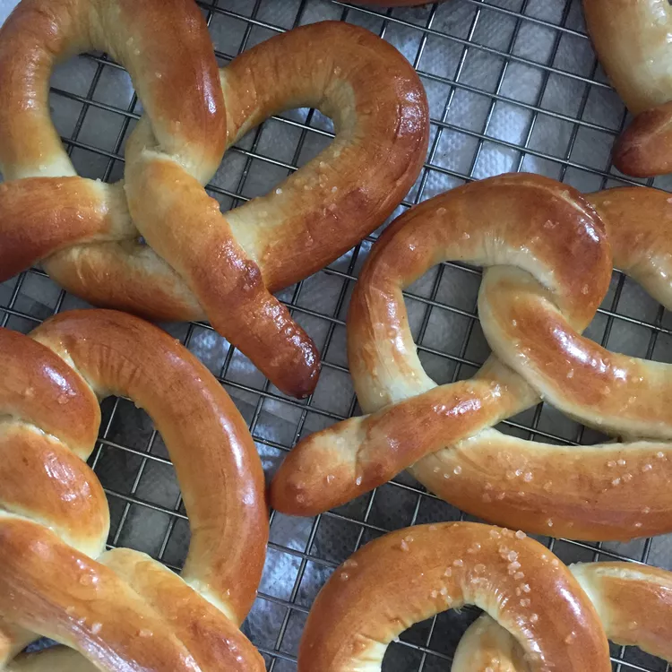

Pretzels

Description
Big chewy pretzels like those sold in the mall! You may substitute garlic salt or cinnamon sugar for the coarse salt if you wish.
Ingredients
- 1 (.25 ounce) package active dry yeast
- 2 tablespoons brown sugar
- 1 ⅛ teaspoons salt
- 1 ½ cups warm water (110 degrees F/45 degrees C)
- 1 cup bread flour
- 2 cups warm water (110 degrees F/45 degrees C)
- 2 tablespoons baking soda
- 2 tablespoons butter, melted
- 2 tablespoons coarse kosher salt
Steps
- In a large mixing bowl, dissolve the yeast, brown sugar and salt in 1 1/2 cups warm water. Stir in flour, and knead dough on a floured surface until smooth and elastic, about 8 minutes. Place in a greased bowl, and turn to coat the surface. Cover, and let rise for one hour.
- Combine 2 cups warm water and baking soda in an 8 inch square pan. Line 6 baking sheets with parchment paper.
- After dough has risen, cut into 12 pieces. Roll each piece into a 3 foot rope, pencil thin or thinner. Twist into a pretzel shape, and dip into the baking soda solution. Place onto parchment covered baking sheets, and let rise 15 to 20 minutes.
- Preheat an oven to 450 degrees F (230 degrees C).
- Bake in the preheated oven for 8 to 10 minutes, or until golden brown. Brush with melted butter, and sprinkle with coarse salt, garlic salt or cinnamon sugar.